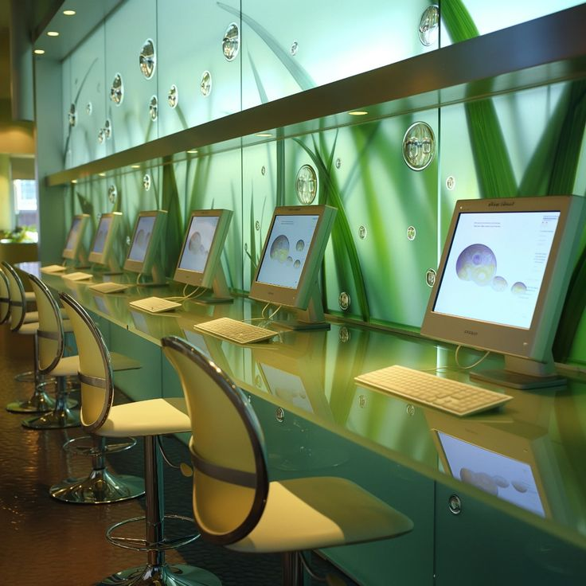

This is list for how it will OS will look
*fade in*, like on windows 7. * music appears* | and person succesuflly installed the system ,only things left which can be replicated online, like OS preferences
Hello world!, thank you for buying Frutiero

this for link in link